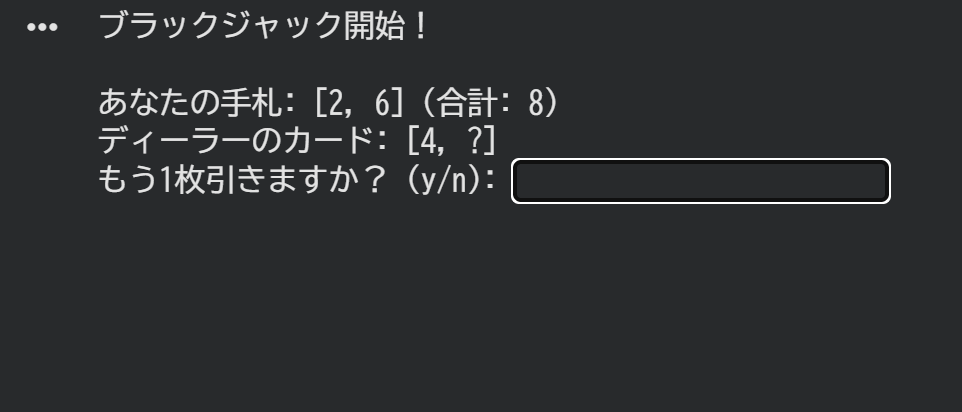
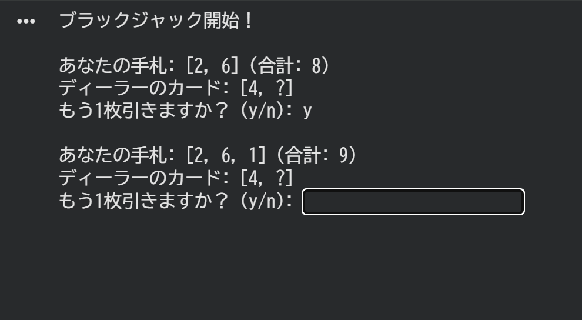
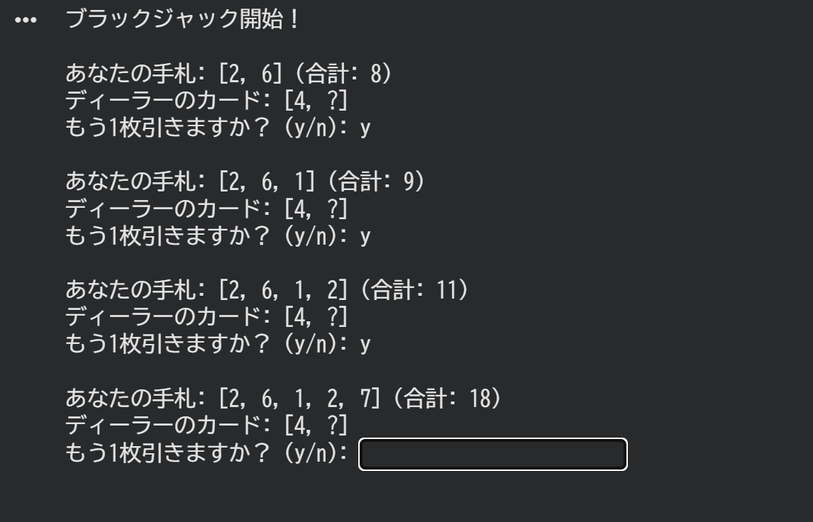
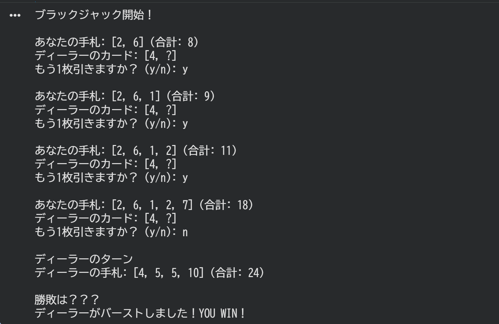
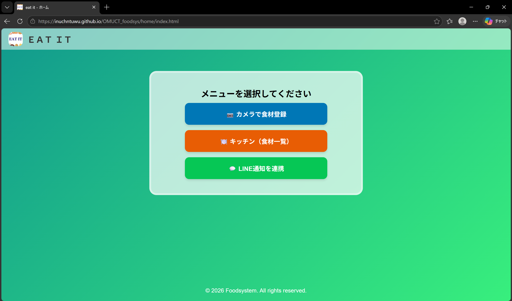
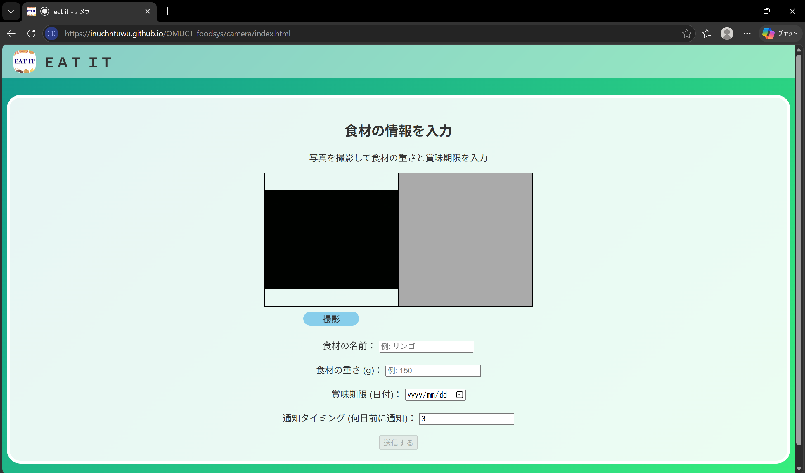
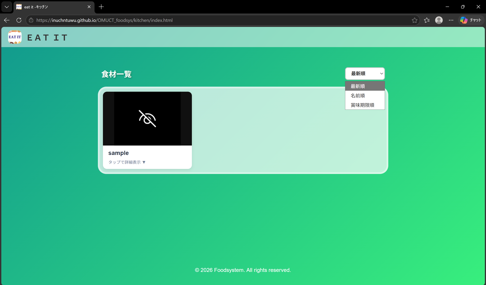
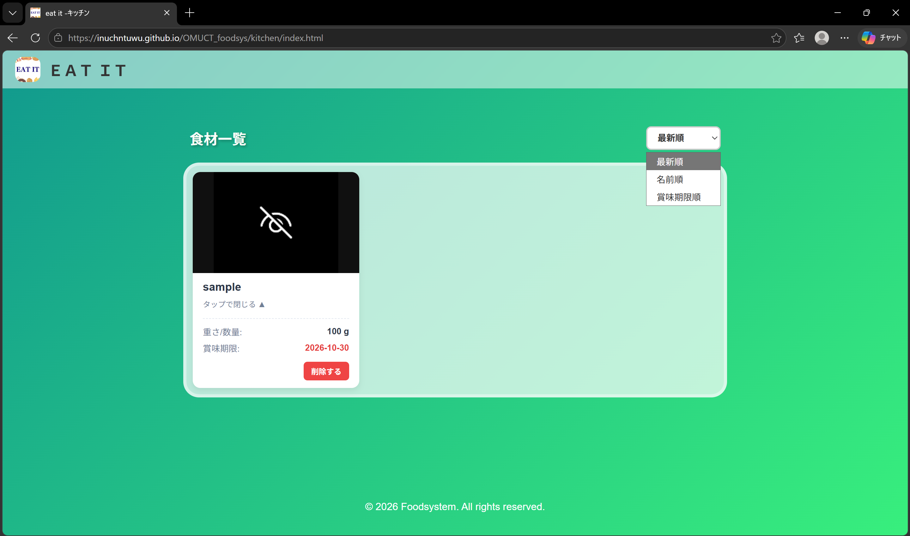

課題04：ブラックジャック
Python自由課題制作作品




大阪公立大学工業高等専門学校
大阪公立大学工業高等専門学校 知能情報コース2年の渋谷勇輝（17歳）です。
プログラミング基礎や情報工学を学んでいます。
趣味：ゲーム (Valorant, Minecraft)、アニメ (One Piece)、釣り、絵描き
Python自由課題制作作品




2年生 総合課題実習 / 高専祭展示 チーム開発作品




概要: 家庭の食品ロスや重複買いを防ぐため、撮影した食材の量・賞味期限・通知日を登録・管理できるWebアプリケーション。
担当範囲・役割: フロントエンド全般（キッチン風UIのデザイン設計、HTML/CSSによる画面実装、JavaScriptによる動的UI制御）
使用技術: